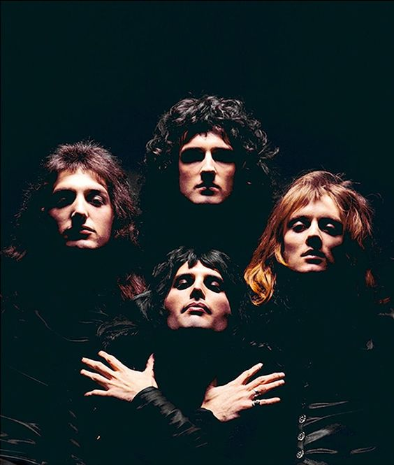

Top 5 Mejores Canciones Pop de la Historia
"Bohemian Rhapsody" - Queen

Fecha de Publicación: 1975
Artista: Queen
Reseña: Esta obra maestra de Queen, lanzada en 1975 como parte del álbum "A Night at the Opera", desafió las convenciones de la música pop con su estructura única y su mezcla de géneros. Es una de las canciones más influyentes y queridas en la historia del rock y el pop.